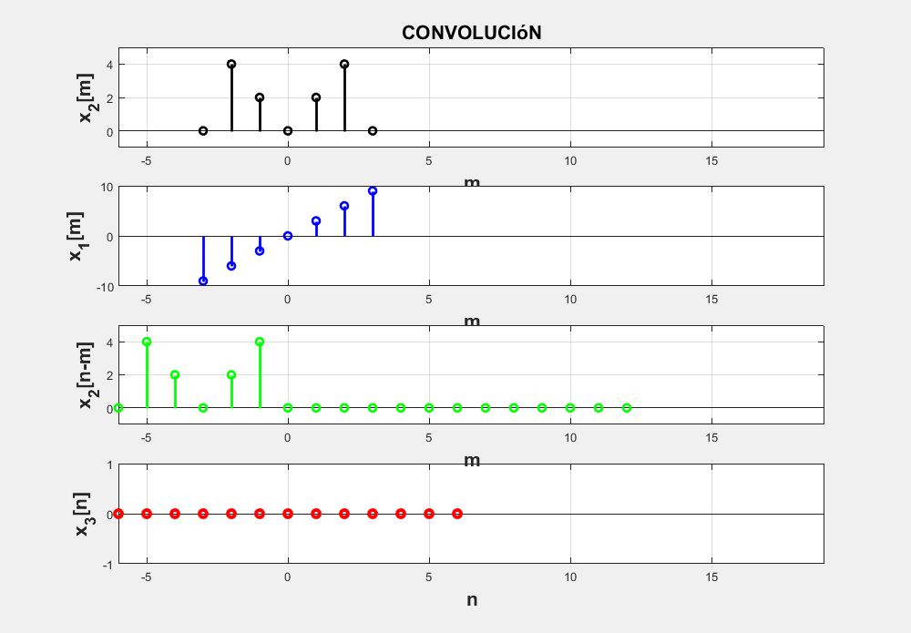

Práctica 4: Convolución y Correlación de señales en tiempo continuo y discreto
Integrantes del equipo: Ortega González Moisés Donaldo,Ortiz Colin Cesar Antonio, Zarate Murillo Jose Antonio
Contents
Introduccion: Algoritmos de integración
%%Introducción: Métodos Numéricos %Geométricamente entendemos la integración como una operación que nos %permite conocer el área que se forma entre una función y el eje de las %absisas dentro de los límites que se definan. La mayor parte de las %operaciones de integración requieren que encontrar una antiderivada; dicho %proceso se logra mediante distintos métodos de integración que se han %definido con el timepo. Sin embargo existen algunas funciones para las %cuáles no es posible encontrar su antiderivada, pues no existen métodos de %integración que puedan aplicarse. En esos casos se ocupan los métodos %numéricos, los cuáles que si bien no nos ayudan a conocer la antiderivada %de la función, nos permiten aproximar el área bajo la curva dentro de los %mismos límites. %Métodos de Newton-Coles %Estos se basan en la idea de que se puede aproximar cualquier función a %un polinomio, si se suma un término de error. Existen varios submétodos %que se eligen según el grado del polinomio a trabajar. %Ejemplo. Sea

%si deseamos calcular el área dada por la integral

%Ma.tlab puede realizar la operación ya que usa algoritmos de métodos %numéricos a=-1; b=1; x=-2:.01:2; f=@(x) exp(-x.^2); area_exacta=integral(f,a,b) %Para tratar de igualar dicho resultado, probaremos los siguientes métodos: %Trapecio se refiere al uso un polinomio de grado uno y se opera con el uso %de la siguiente fórmula n=1; h=(b-a)/n; x0=a; x1=b; area_trapecio=(h/2)*(f(x0)+f(x1))%-E %Simpson trabaja con polinomios de grado dos y ocupa la siguiente fórmula. n=2;h=(b-a)/n; x0=a; x1=(b+a)/2; x2=b; area_simpson=(h/3)*(f(x0)+4*f(x1)+f(x2))%-E %Simpson 3/8 trabaja con polinomios de grado 3 . n=3; h=(b-a)/n; x0=a; x1=(2*a+b)/3; x2=(2*b+a)/3 ;x3=b; area_38simpson=(3*h/8)*(f(x0)+3*f(x1)+3*f(x2)+f(x3))%-E %Compuesta. Se trata de aplicaciones de las formas pasadas cuando se divide %a la señal en pequeños segmentos, a cada uno de los cuales se aplican los %métodos anteriores, resultanto las siguientes fórmulas para cada caso: %probando la regla de trapecio compuesta syms k; n=10;h=(b-a)/n; xk=a+h*k; area_trapecio_compuesta=(h/2)*(f(a)+2*symsum(f(xk),k,1,n)+f(b))%-E %probando la regla de Simpson compuesta n=10; h=(b-a)/n; x0=a; xk=a+h*k; xk2=a+h*(k-1); area_38simpson=(h/3)*(f(a)+2*symsum(f(xk),k,1,(n/2)-1)+4*symsum(f(xk2),k,1,(n/2))+f(b))%-E
area_exacta =
1.4936
area_trapecio =
0.7358
area_simpson =
1.5786
area_38simpson =
1.5262
area_trapecio_compuesta =
exp(-1)/5 + (2*exp(-1/25))/5 + (2*exp(-4/25))/5 + (2*exp(-9/25))/5 + (2*exp(-16/25))/5 + 616038134154747/2251799813685248
area_38simpson =
(4*exp(-1))/15 + (2*exp(-1/25))/5 + (2*exp(-4/25))/5 + (2*exp(-9/25))/5 + (2*exp(-16/25))/5 + 828390857088487/16888498602639360
Problema 1
A continuacion la solucion del problema 1
x = @(t) exp(-t).*(t>=0 & t<=1);% Se declara la primer función h = @(t) t.*(t>=-1 & t<=1);% Se declara la segunda función n=0:1;% Intervalo valido de la primera funcion m=-1:1;% Intervalo valido de la segunda funcion convconm(x,h,n,m)
En la siguiente imagen se muestran las ecuaciones pertinentes a las funciones analiticas obtenidas de la convolucion
figure(2)
f=imread('1.jpg');
imshow(f)

Problema 2
Debido a que las funciones analiticas son distintas, para superponer el resultado de la autocorrelación con el codigo convconm y las graficas de las funciones analiticas previamente encontradas se necesitó crear convconm2, a continuación la solución del problema 2
x1=@(t) (heaviside(t)-2.*heaviside(t-3)+heaviside(t-4)).*(t>=0 & t<=4); %funcion dada xd1=@(t) (heaviside(-t)-2.*heaviside(-t-3)+heaviside(-t-4)).*(t>=-4 &t<=0);% funcion invertida para hacer la correlacion a partir del codigo de convolución n=0:4;% definidas en el intervalo 0-4 m=-4:0;% invertida esta definida de -1-4 convconm2(x1,xd1,n,m)
En la siguiente imagen se muestran las ecuaciones pertinentes a las funciones analiticas obtenidas de la convolucion
figure(3)
Y=imread('2.jpg');
imshow(Y)
Problema 3
a=@(n) 3.*n;% formula de la señal(c) n=-3:3; % vector valido de la señal,al evaluarla en a nos dara las alturas b=@(n) -2.*n.*(n>=-2 & n<=0)+2.*n.*(n>=0 & n<=2);% señal 2 (d) convdisc([n;a(n)],[n;b(n)])
Problema 4
a=@(n) 3.*n;% formula señal(c) la misma que en la convolucion n=-3:3; c=@(n) -2.*n.*(n>=-2 & n<=0)+2.*n.*(n>=0 & n<=2);;% señal 2 (d) si la invierto(estructura de correlacion para hacer convolución) es la misma, asi que la funcion no cambia; convdisc([n;a(n)],[n;c(n)])

Problema 5
A continuacion el codigo usando el comando conv que soluciona el problema 5( el cual es el mismo que el problema 3)
figure(4) n=-5:5; X1=[0 0 -9 -6 -3 0 3 6 9 0 0];%alturas de la señal 1 X2=[0 0 0 4 2 0 2 4 0 0 0];%alturas de la señal 2 X3=conv(X1,X2,'same');%utilizamos el comando conv subplot(3,2,1); stem(n,X1,'filled','g','linewidth',2);%graficamos la señal(c) title('X1[n]'); grid on subplot(3,2,2); stem(n,X2,'filled','r','linewidth',2);%graficamos la señal (d) title('X2[n-m]'); grid on subplot(3,2,[3 6]); long_fg_n=length(X1)+length(X2)-1; stem(n,X3,'o','filled','linewidth',2); title('Convolución'); grid on
Referencias
Lathi, B. P., (2005). Linear Systems and Signals. EUA: Oxford university Press